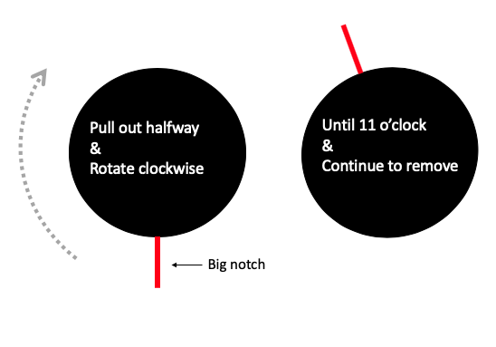
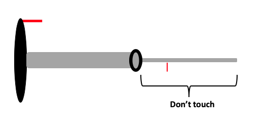

Part 3 Load Sample
Once the beam is found and centered we can load the sample. We need to start by turning the T12 off so we can remove the sample holder. This process is the reverse of the “Startup”.
Turn off filament
Col. Valves Closed
wait until filament is off
Reset Holder (check to see x, y, and z are all close to “0, 0, 0”)
Remove sample holder (this is a little tricky and is done in steps)
- Pull out gently on sample holder until it resists and don’t pull any farther
- Rotate holder to ~11 o’clock and pull all the way out.

Figure 3.1: Schematic of removing sample holder
BE CAREFUL LOADING SAMPLE HOLDER IN & OUT. USE COMMON SENSE DON’T FORCE ANYTHING
- Load Sample
- Do not ever touch sample holder below rubber o-ring

Figure 3.2: Side view of sample holder
- Put sample holder back into T12
- Line up the small pin (below the o-ring) with the “close” on the T12. The big notch should be around 11 o’clock.
- Push in halfway until you feel it “catch”. If done correctly the vacuum pump timer on the left monitor will jump down to 2 min.
- Wait the 2 minutes for the vacuum pump to turn off, rotate sample holder 60 degrees so the big notch lines up with the slot in the T12, and place in the scape. Try to do this step in one smooth quick motion. DO NOT LET GO. There will be some pressure from the vacuum sucking the holder in.
The sample is now in the scope ready to be imaged.